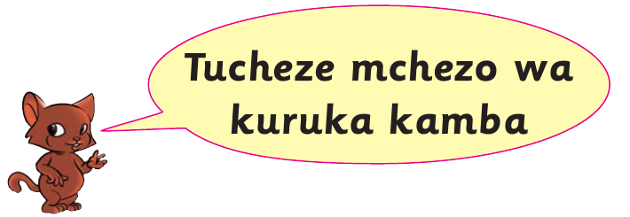

Tucheze mchezo wa kuruka kamba


Kuna aina mbili za kucheza mchezo wa kuruka kamba
1. Kuruka kamba mtu mmoja
2. Kuruka kamba watu wawili au zaidi
Kuruka kamba mtu mmoja
Mchezo huu huchezwa na mtu mmoja. Mchezaji hurusha kamba yake na kuruka mwenyewe. Mchezaji anaweza kuruka kwa miguu miwili au mmoja.

Jinsi ya kuruka kamba kwa miguu miwili
1. Shika mwanzo wa kamba kwa mkono mmoja.
2. Na mwisho wa kamba kwa mkono mwingine.

3. Irushe kamba juu kwenda mbele kutokea nyuma yako.
4. Kamba inapotua chini iruke bila kuikanyaga.

5. Anza kuruka kamba kwa miguu miwili.
6. Endelea kuruka kamba kwa kuhesabu.
7. Ukiikanyaga kamba utamwachia mwenzio acheze.
8. Atakayeruka mara nyingi bila kukanyaga kamba ndiye mshindi.
Shughuli ya kufanya 12
Ruka kamba kwa miguu miwili.